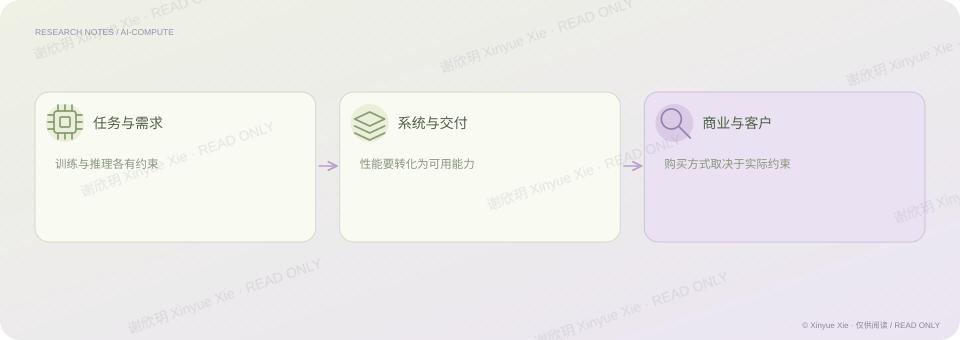
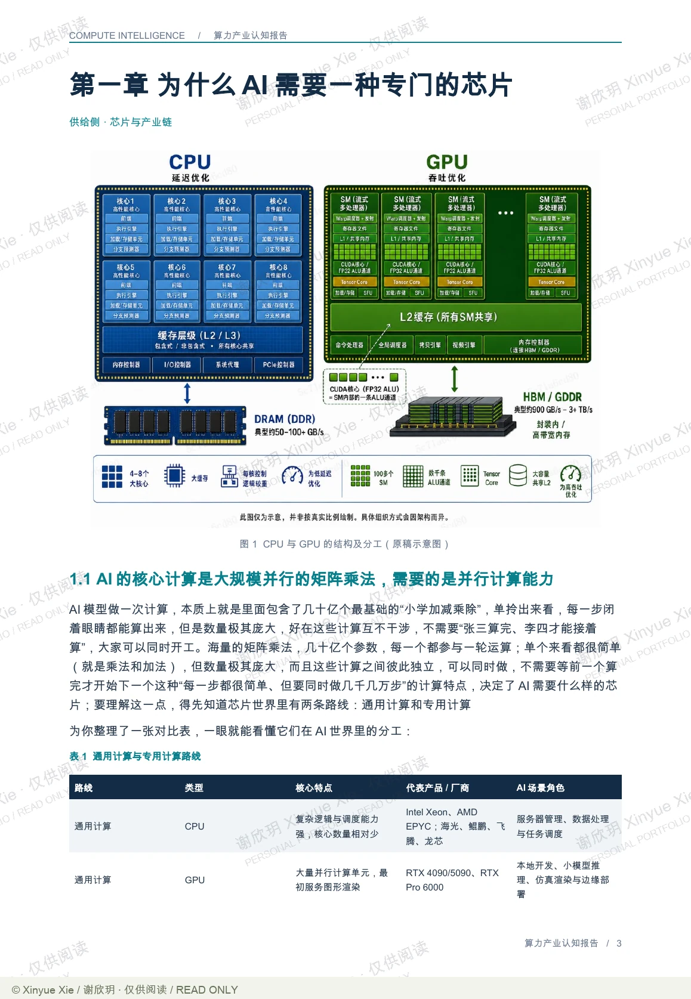
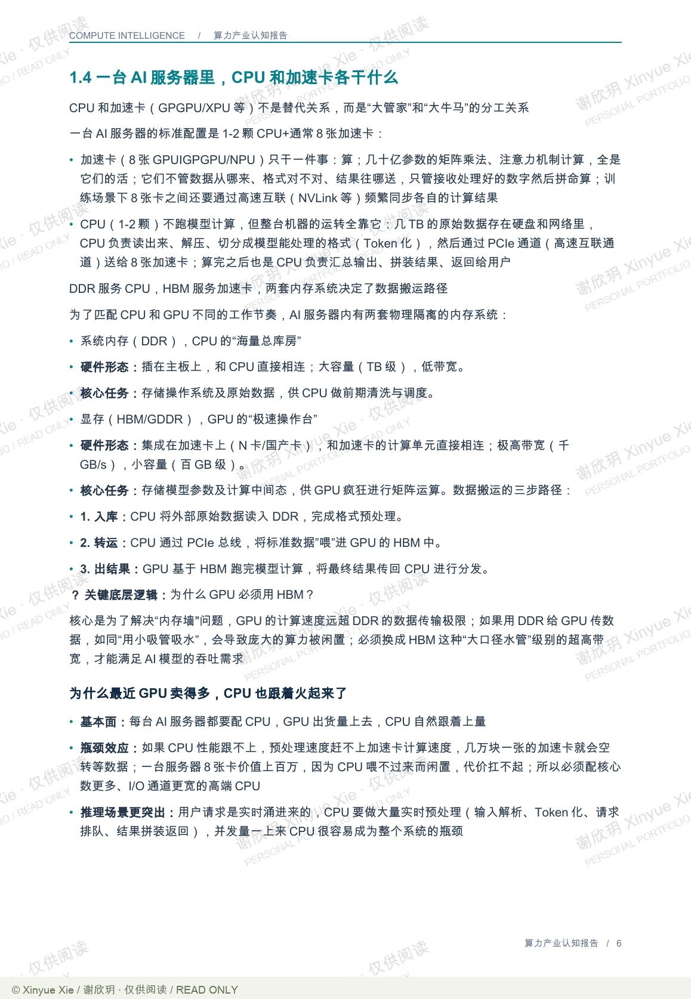
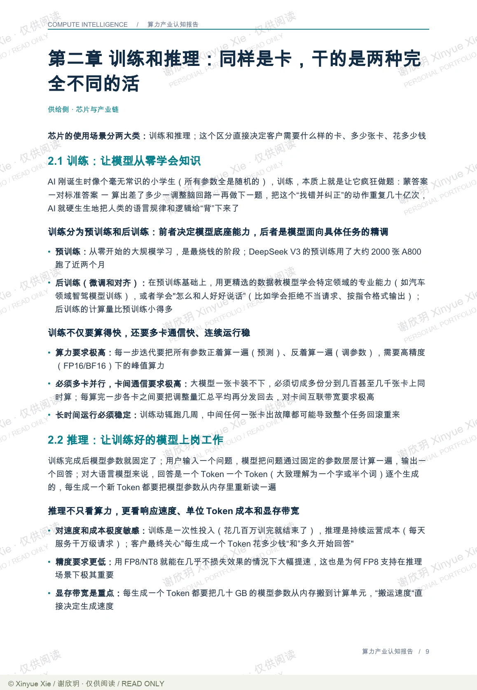
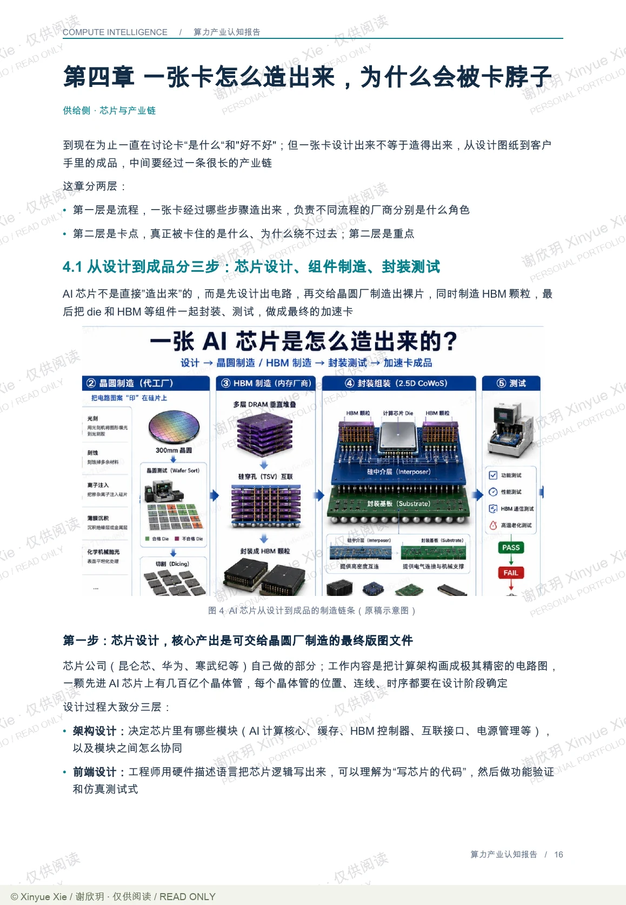
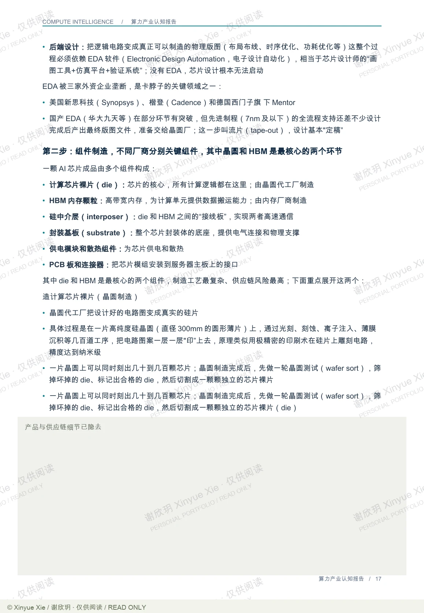
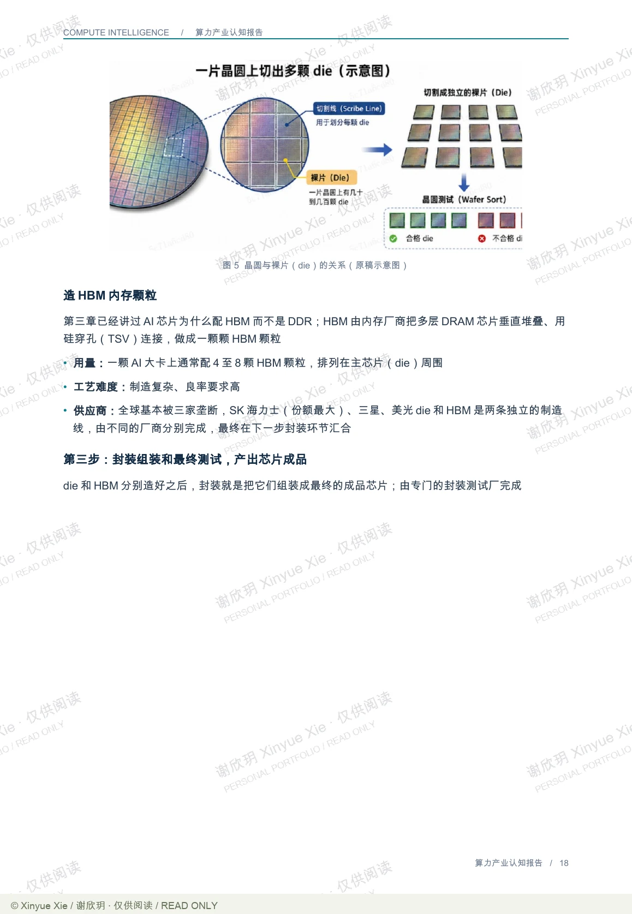

算力产业认知报告 · 42 页
算力产业：从芯片到商业化
客户购买的，是芯片，还是可用的计算能力？
在线阅读报告 ↘PROJECT NOTES / THE BIG PICTURE
研究思路

01核心判断
这份研究从一个具体问题出发：为什么单卡性能更强，并不必然意味着客户会选择它？报告先区分训练与推理的任务需求，再比较显存、互联、软件适配和供应链，随后把单卡放进服务器、集群及服务模式中讨论。最后，研究回到客户的预算、技术团队和准入要求，解释同一套算力为什么可能以设备、租赁资源或模型调用服务的形式成交。它呈现的是一条从技术条件走向商业选择的分析路径。
02分析过程
先看任务：训练与推理对计算、显存、通信和稳定性的要求不同，因此不能只凭一个峰值算力数字比较产品。 再看能否交付：芯片性能需要通过供给、封装、软件适配和多卡协同，才能变成可持续使用的系统能力。 然后看如何赚钱：卖设备、租算力和提供模型调用服务，对收入持续性、运营责任和利用率的要求并不相同。 最后回到客户：预算来源、技术消化能力和合规要求，会筛选出真正可采购的方案；技术上可行只是其中一个条件。
03关键证据
以客户选型为例，报告把“需要什么算力”与“最终买什么”分开：预算及其使用条件、工程团队的适配能力、合规与准入要求，会共同改变采购方案。因此，比较芯片不能停在参数表，还需要比较交付与使用成本。见原报告第 33–36 页；具体客户与交易信息不进入这段摘要。
相关经历百度 · AI 战略
理解商业
把芯片与系统能力连接到交付方式和客户采购。
检验证据
按任务比较性能，避免把一个参数当成完整竞争力。
算力产业认知报告 · 公开节选
6 页公开节选 · 署名水印
算力产业认知报告 · 公开节选
6 页公开节选 · 署名水印公开节选包含芯片分工、训练推理及制造流程；客户、报价与内部竞争分析未纳入，部分供应链细节已隐去。






谢欣玥 Xinyue Xie · 研究作品仅供在线阅读
← 返回全部作品